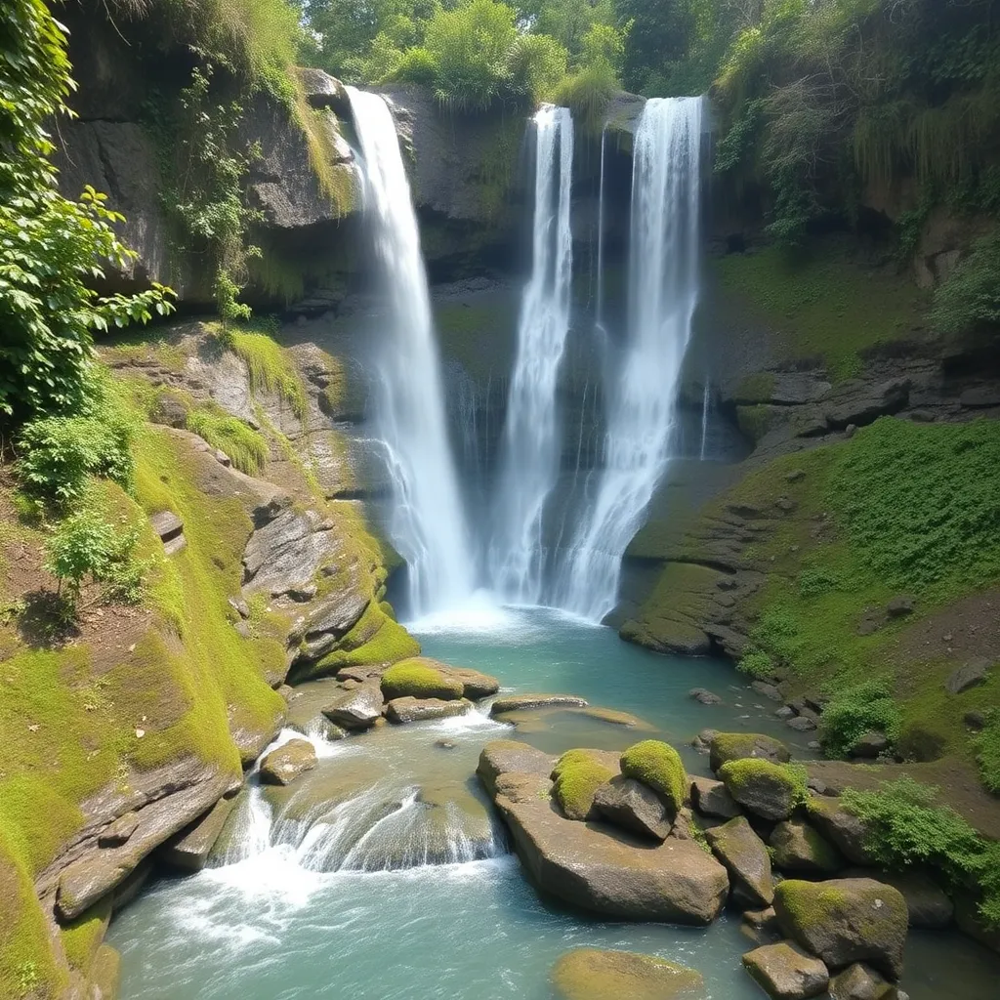
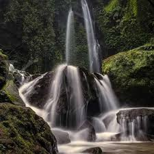

Wisata alam coban rondo
Published on November 17, 2024 | radar malang
Coban Rondo terletak di Desa Pandesari, Kecamatan Pujon, Kabupaten Malang, Jawa Timur. Coban Rondo berarti coban artinya air terjun dan rono artinya janda. Artikel ini telah tayang di Kompas.com dengan judul "Coban Rondo di Malang: Daya Tarik, Wahana, Harga Tiket, dan Legenda",
Daya Tarik Coban Rondo Coban Rondo memiliki ketinggian sekitar 84 meter. Sedangkan, lokasi air terjun berada pada ketinggian 1.134 meter di atas permukaan laut. Udara di sekitar sejuk dan tempat yang sesuai untuk liburan. Artikel ini telah tayang di Kompas.com dengan judul "Coban Rondo di Malang: Daya Tarik, Wahana, Harga Tiket, dan Legenda"
Pada musim penghujan, debit air terjun dapat mencapai 150 liter per detik, sedangkan pada musim kemarau dabit air terjun sekitar 90 liter meter per detik. Dengan air terjun yang cukup tinggi, pengunjung yang mendekati air terjun akan terkena titik-titik air yang diterbangkan angin. Semakin dekat air terjun, pakaian akan semakin basah. Selain melihat panorama air terjun yang turun dari tebing, pengelola juga menyediakan sejumlah fasilitas wisata, seperti camping ground, tempat pemancingan, jogging track, penginapan, lintasan sepeda gunung, mengitari labirin, maupun persemian tanaman hutan.
Konon, nama Coban Rondo diambil dari kisah Dewi Anjarwati dari Gunung Kawi yang menikah dengan Raden Baron Kusuma dari Gunung Anjasmoro